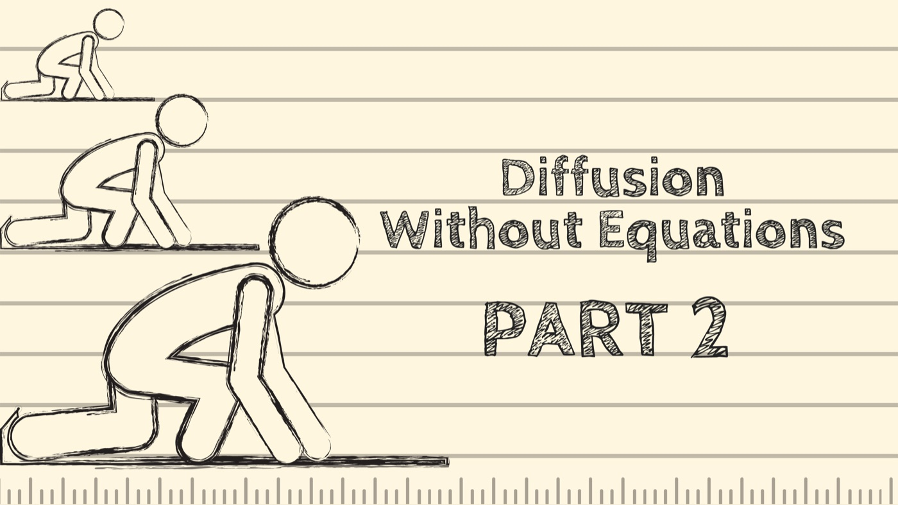
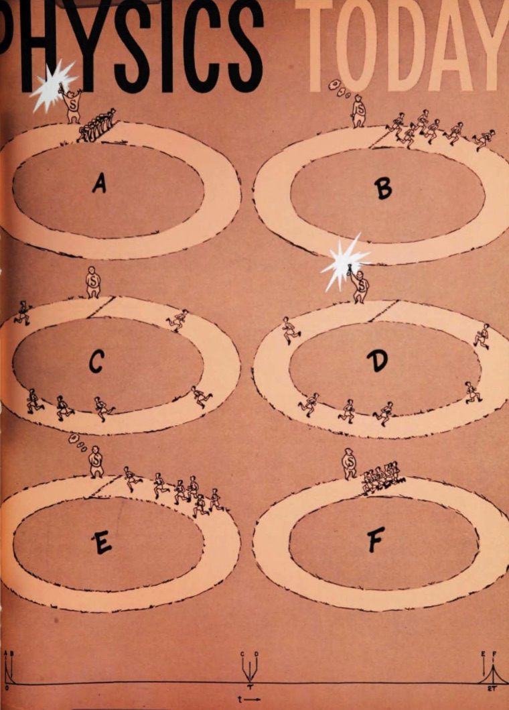

Originally published June 6, 2017 on ISMRM's MR Pulse blog


Figure 1. Hahn’s famous spin echo analogy on the cover of Physics Today.
In Part 1 of our Diffusion Without Equations series we looked at the history of diffusion imaging. Here we develop the intuition behind a diffusion MRI sequence. The key underlying concept of diffusion imaging is based on the interaction of water molecules with their local environment; by measuring the magnitude and direction of water motion, information on the tissue microstructure can be inferred. If we know the duration of the diffusion gradients, the MRI signal decay can provide information on the displacement of the water molecules.
To visualize the process of diffusion MRI we introduce an analogy involving track runners. Let’s think of the individual water molecules as different runners (blue dots) in separate lanes, mirroring the famous Hahn spin echo analogy first described in his landmark 1953 Physics Today paper (Figure 1). To simplify the analogy, we assume that all of the runners run on a straight track at an equal pace. The runners, however, are not on a normal track; instead, each lane is a treadmill, whose speed (gradient strength G) and duration of activation (gradient duration δ) can be controlled by an operator (MR user). This treadmill is analogous to the diffusion gradients in a Stejskal-Tanner pulsed gradient spin echo sequence. In our analogy, we describe the extent of diffusion (diffusion coefficient slider) as runners moving into a neighboring lane randomly. The higher the diffusion coefficient, the greater the number of runners switching lanes. When the runners move into another lane, their speed is changed to the speed of the treadmill they moved into.
At the sound of the starting pistol (start button), the runners take off (point A), analogous to how spins are flipped into the transverse plane at the application of a 90º pulse. This animation can illustrate how the diffusion-weighted signal is captured either with 180º refocusing pulses (SE button) or without them (GRE button). We will first consider the SE scenario, which corresponds to the original Stejskal-Tanner sequence.
Spin echo (SE) sequence
In the SE sequence, a pair of bipolar gradients (with varying strength and duration but same polarity) is placed around the 180º refocusing pulse. When the gradient is turned on (point B), phase dispersion is introduced to the spins (treadmill starts moving). This dispersion depends on the runner’s location, i.e. the runners at the edges of the race track experience a stronger magnetic field (treadmills move faster), whereas those toward the center move slower. This causes the distance between runners to grow. At the application of the 180º refocusing pulse (point D), the entire track flips, and the runners’ positions are now mirrored. When no diffusion is present (diffusion coefficient slider set to minimum), after the 180º pulse the slowest runner would be leading the race, and the faster ones would be further away from the finish line. The application of the second bipolar gradient (point E) would cancel out the dispersion caused by the first, allowing all runners to finish the race at the same time. In a real MRI experiment, this means that phase accrual from the first diffusion gradient would be completely reversed by the second gradient, and there would be no signal decay (picky point for the hardcore physicist: we are ignoring T2 relaxation).
Now let’s see what happens when diffusion does occur. To do that, we need to drag the diffusion coefficient slider to the right. The runners are now randomly changing treadmills, and their speed changes if the gradient G is non-zero. They move faster if they diffuse toward the edges, or slower if they diffuse toward the center. Through a series of lane shifts, which could happen before or after the 180º pulse (point D), at the end of the race some runners will be ahead and some will be behind the finish line. These are the runners that produce a signal loss due to diffusion, as they are out of sync with the runners at the finish line.
Gradient echo (GRE) sequence
Diffusion can also be observed without a 180º pulse, using only a gradient echo sequence. In this case however, the two diffusion gradients need to be of opposing polarity to enable rephasing. Without diffusion, just like in the SE case, the runners will all reach the finish line at the same time, and no signal will be lost. However, with diffusion, the runners cross the finish line at different times, resulting in imperfect refocusing.
So where does the b-value come from?
So, ever wondered why diffusion weighting is described by a quantity called a b-value? Well, the name comes from Denis Le Bihan, who first described it. The quantity itself comes from a combination of the gradient strength and timing. Play around with the parameters in the simulation to see what happens with the b-value. Increase the gradient duration δ or diffusion time Δ, and the b-value goes up. Increase G, and the b-value also goes up. The higher the b-value, the stronger the diffusion effect! Note that while the diffusion coefficient doesn’t affect the b-value, it does affect the diffusion-weighted signal. The default setting is with the highest possible b-value (which is on a scale from 0 to 1 for demonstration purposes) and with no diffusion present. Have fun!
Acknowledgement: We thank Will Grissom for his JavaScript advice, and Denis Le Bihan and Joseph Ackerman for their feedback during the early stages of the diffusion animation.